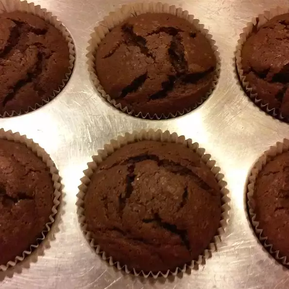

Moist Potato Chocolate Cake

Description
This is a rich chocolate cake with mashed potato to make it moist! It goes great with your favorite chocolate cream cheese frosting.
Ingredients
- ½ cups all-purpose flour
- ½ cup unsweetened cocoa powder
- 1 teaspoon baking powder
- 1½ teaspoon salt
- 2 (1 ounce) squares bittersweet chocolate, chopped
- ½ cup butter
- 1½ cups white sugar
- 2 eggs, room temperature
- ¾ cup mashed potatoes
- ¾ cup mashed potatoes
Steps
- Preheat the oven to 350 degrees F (175 degrees C). Grease and flour two 8-inch round cake pans.
- Sift together flour, cocoa powder, baking powder, and salt; set aside. Melt the bittersweet chocolate in a cup or small bowl in the microwave, stirring every 15 seconds, until smooth. Warm mashed potatoes in microwave until room temperature (or cool freshly mashed potatoes).
- Beat butter and sugar with an electric mixer in a large bowl until light and fluffy. The mixture should be noticeably lighter in color. Add the room-temperature eggs one at a time, allowing each egg to blend into the butter mixture before adding the next. Mix in the mashed potatoes and melted chocolate. Pour in the flour mixture alternately with the milk, mixing until just incorporated. Pour the batter into prepared pans, smoothing the surface if needed.
- Bake in the preheated oven until a knife inserted into the center of the cake comes out clean, 25 to 30 minutes. Cool cakes in pans on a wire rack.